Platform THex Quadruped · 1.39847 kg · 12 joints (4 legs × 3) · Simulator Gazebo Harmonic 8.14 (DART) · ROS 2 Humble Campaign 12–30 July 2026 · 212 simulation runs across 5 phases
A linear torsion spring was placed in parallel with each knee actuator of a 1.4 kg quadruped and its two parameters — stiffness kx and rest angle θ0 — were swept exhaustively in simulation. With the rest angle mirrored per leg, the spring removes 34.39% of mean knee motor torque (0.2352 → 0.1543 N·m) and 34.7% of the electrical (copper-loss) cost of transport. Mechanical cost of transport falls only 7.4%; the gap is not a contradiction but a measurement property, because the spring cancels static holding torque, which performs almost no mechanical work.
The optimum is a hyperbolic ridge rather than a peak: the design has one effective degree of freedom, and a locus of very different (kx, θ0) pairs all deliver 33.6–34.4%. Mirroring the rest angle eliminated all wrong-sign assist (0 of 360 knee-cells, against 50 of 440 in the shared-angle sweep) and tightened bilateral asymmetry from 3.96 to 1.15 percentage points. The recommended configuration, kx = 0.20 N·m/rad with |θ0| = ±15°, gives 34.12% reduction and is the tightest bilaterally symmetric cell in the sweep.
Two results are independent of the spring. Peak knee demand is limited by the 10 Hz stepped set-point, not by the actuator or the spring: refining the trajectory from 16 to 32 waypoints cuts peak demand 48.7% with no spring fitted, roughly twice the benefit of halving the replay rate at the same cycle time. And baseline peak demand (0.9831 N·m) already exceeds the 0.9414 N·m actuator rating, so the spring improves motor sizing margin but does not resolve it.
| Parameter | Value | Source |
|---|---|---|
| Platform | THex Quadruped, 4 legs × 3 joints = 12 DoF | model.sdf |
| Total mass m | 1.39847 kg (13 links) | summed from model.sdf |
| Actuator limit | ±0.9414 N·m per joint | <effort> in model.sdf |
| Control | position PID, 10 Hz gait loop | kinematic_gait.py |
| Logging | 50 Hz, all 12 joints | kinematic_gait.py |
| Gait | open-loop kinematic; quadratic Bézier swing + linear stance | kinematics.py |
| Physics | DART via Gazebo Harmonic 8.14 | — |
| Gravity (CoT) | 9.8 m/s² → mg = 13.7050 N | Gazebo default |
| Gravity (measured) | 9.7811 m/s² | IMU accelerometer mean |
The two gravity values differ and are used for different purposes. The cost-of-transport denominator uses Gazebo's nominal 9.8 m/s²; the 9.7811 figure is the measured IMU mean and serves only as a cross-check that the simulator's gravity is what we think it is. Earlier drafts of this work quoted 9.78 in the CoT normalisation, which was wrong — mg = 13.7050 N recovers exactly from the logged data.
The spring acts in parallel with the actuator, so whatever holding torque it supplies is torque the motor no longer has to:
τ_total(θ) = τ_motor(θ) + τ_spring(θ)
τ_spring(θ) = k_x · (θ₀ − θ)
⇒ τ_motor(θ) = τ_required(θ) − k_x · (θ₀ − θ)
Springs were fitted to the knees only; hips and feet carry no spring but still consume energy, so they are included in every whole-robot energy figure.
In mirrored mode (Phase 2b) each knee receives a sign-matched rest angle, θ0 = sign(HOLD) · |θ0| — negative for the right knees, positive for the left. Section 4.3 explains why this is necessary.
The fraction of the required holding torque that the spring supplies at the stance operating point is
ratio = τ_spring(q_op) / HOLD = k_x · (θ₀ − q_op) / HOLD
where qop is the measured mean stance angle and HOLD the measured signed mean motor effort in a baseline run. This single quantity separates two failure modes that are easily confused because both appear as a negative reduction:
| Assist ratio | What the spring does | What the motor must do | Outcome |
|---|---|---|---|
| 0 – 100% | lifts part of the load | carries the rest | helpful |
| ≈ 100% | lifts exactly right | carries almost nothing | best case |
| > 200% | lifts too hard | pushes back down | over-assist |
| < 0% | pulls the wrong way | carries load and fights spring | wrong sign |
Over-assist is a tuning error — the direction is right, the magnitude too large. Wrong-sign assist cannot be tuned away: no stiffness helps when the spring pulls the wrong way.
These are used throughout and are easy to misread, so they are defined once here. All are computed over the four knees and then averaged.
| Metric | Definition | Why it exists |
|---|---|---|
| Mean applied effort | mean of min( | τ |
| RMS applied effort | sqrt{mean(τ2)} on the same rectified signal | thermally relevant load |
| Peak demand | max | τ |
| p99 demand | 99th percentile of the same unclipped signal | sizing without single-sample outliers |
| Saturation % | fraction of applied samples at ≥ 0.9414 - 10-4 | how often the actuator lost authority |
| Torque variance | variance of the rectified effort | load smoothness (note: not of the signed signal) |
| Mechanical work | Σ | τ · dθ |
Two subtleties matter. First, applied effort is clipped by the physics engine, so max(applied) reads exactly the limit in most runs and carries no information — which is why peak and p99 are taken from the commanded stream instead. Second, a 10 Hz stepped set-point produces occasional single-sample derivative kicks, so peak alone is unreliable; a large peak/p99 ratio flags a cell as a control artifact rather than real demand (Section 5.8).
Table 1. Campaign overview. Each phase fixed a measurement limitation found in the previous one; the effort columns only exist from Phase 2a onward.
| Phase | Runs | Mean knee effort (N·m) | Best reduction | RMS change | Saturation range | Note |
|---|---|---|---|---|---|---|
| 1 — Harness | 4 | torque magnitude only | — | — | — | no commanded-effort logging |
| 2a — Shared sweep | 111 | 0.2345 | 33.97% | -25.3% | 0.00–2.56% | 50/440 wrong-sign knee-cells |
| 2b — Mirrored sweep | 91 | 0.2352 | 34.39% | -25.7% | 0.00–2.12% | 0/360 wrong-sign; CoT available |
| 3a — Frequency | 3 | 0.2101–0.2424 | no spring | — | 0.19–4.88% | peak +27%, saturation 6.5× at 20 Hz |
| 3b — Resolution | 3 | 0.1994–0.2246 | no spring | — | 0.00–0.62% | peak −49% at 32 pts; N=8 degenerate |
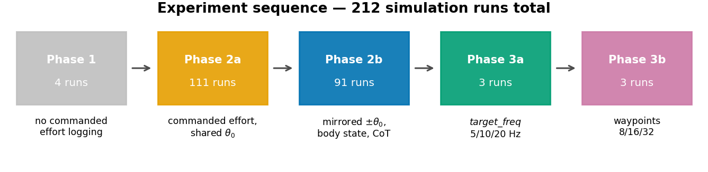
Figure 1. Experiment sequence. Run counts are globbed from disk rather than asserted.
Four provenance facts constrain what this report can compare, and each has caused an error in earlier drafts of this analysis:
Phase 1 cannot enter any effort comparison. It logs only unsigned joint torque magnitude and position command-vs-state. There is no commanded-effort column of any kind, so no reduction percentage, no RMS effort and no energy figure can be computed for it. Phase 1 is reported as a harness change log with torque-magnitude evidence.
Cost of transport exists only for Phase 2b. The CoT denominator needs forward
displacement, which comes from body_state.csv — present in 91 of 91 Phase-2b runs and
in zero runs of every other phase.
The two sweeps share no interior grid point. Phase 2a spans kx 0.05–0.50 with θ0 0…−50°; Phase 2b spans kx 0.05–0.45 with |θ0| 0…45°. Only the θ0 = 0° line is common to both, and the two baselines were re-simulated rather than reused (0.2345 vs 0.2352 N·m mean knee effort, +0.31%). Every cross-sweep claim in Section 6 rests on that single shared column.
The run_dir column in all 202 sweep rows is stale. It points at
ROS/experiment/runN, a scratch directory renamed after each sweep and no longer
present. Runs are therefore resolved by run_index → <phase_dir>/run<N>, a mapping
verified 1:1 and gapless for both sweeps. Note also that run_dir cannot identify which
phase a row belongs to: rows in two different CSVs claim identical paths.
Two smaller items. Phase 1 has a numbering gap — run1, run2, run3, run6
exist; runs 4 and 5 were not kept. And Phase 1's joint_commands_vs_states.csv carries
one NaN row (the last) in every _state column, so all Phase-1 statistics here are
NaN-aware.
Recording in Phases 2–3 begins only after a one-gait-cycle warm-up, so the spawn transient is excluded by construction. The first recorded cycle still runs measurably hot; Section 10 quantifies the consequence.
Four exploratory runs established that the gait produces measurable, cyclic knee torques, and progressively removed artifacts that made the early data unusable for spring optimisation. This is a change log, not a controlled experiment: the runs differ in more than one variable.
Table 2. Phase 1 run-by-run change log and start-up transient magnitude. Notes are quoted from each run_info.txt; torque statistics are over all 12 joints.
| Run | Waypoints/cycle | Log start (s) | Peak |τ|, first 0.5 s | Peak |τ|, rest | Early/rest | Mean |τ| | Mean err | Change recorded in run_info.txt |
|---|---|---|---|---|---|---|---|---|
| run1 | 20 | 7.420 | 1.9558 | 0.9414 | 2.08× | 0.1894 | 4.62° | A simple run with all the basic configuration no changes (Baseline) |
| run2 | 20 | 5.888 | 0.9611 | 0.9490 | 1.01× | 0.1758 | 4.66° | this is run basically with the dynamics attach in sdf (so friction and dampning |
| run3 | 16 | 2.740 | 1.4784 | 0.9548 | 1.55× | 0.1966 | 5.25° | Removed the two stall phases from the walking trajectory |
| run6 | 16 | 0.000 | 0.4631 | 0.4570 | 1.01× | 0.1104 | 3.52° | so this is no stall and start from home position or gait starting position rather than lating flat on ground |
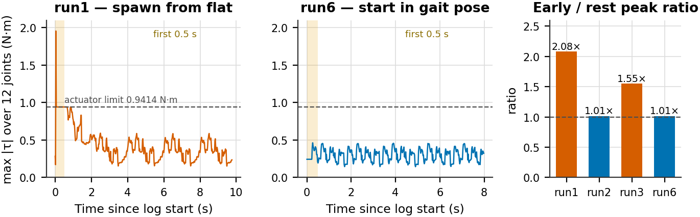
Figure 2. Start-up transient. Left and centre: envelope of peak absolute torque across all 12 joints for run1 (spawned lying flat) and run6 (started in the gait pose). Right: ratio of the first-0.5 s peak to the peak over the remainder, for all four runs.
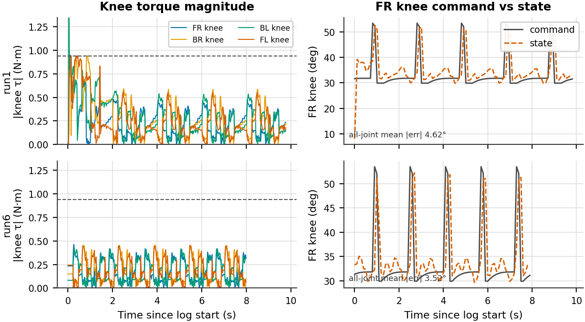
Figure 3. Knee torque magnitude and FR-knee command-vs-state tracking for run1 (top) and run6 (bottom).
The start-up artifact is real and large. In run1 the logger begins 7.420 s into the simulation and the first 0.5 s still contains a 1.9558 N·m spike — 2.08× the peak over the remaining 9.3 s, and more than twice the actuator's own 0.9414 N·m rating. By run6 the transient is gone: the early peak (0.4631 N·m) matches the steady-state peak (0.4570 N·m) to within 1.3%, giving a ratio of 1.01×, and the log starts at t = 0 because the robot is already in its gait pose.
Figure 1 shows the transient is not confined to the first half second — run1's envelope decays over roughly four seconds, so any metric averaged over a short run was contaminated well beyond the window usually inspected. Mean tracking error also improves from 4.62° to 3.52°, consistent with a controller that no longer starts behind.
What cannot be concluded. Overall peak torque falls 4.22× and mean torque 42% from run1 to run6, but three things changed across those runs — SDF joint damping and friction were added (run2), the two stall phases were removed (run3), and the start pose changed (run6). The transient removal is attributable to the start-pose change because the early/rest ratio isolates it; the amplitude reduction is not attributable to any single change. Run3 is also a caution against reading these as monotone progress: it has the highest mean torque of the four.
The decisive limitation is what Phase 1 does not record. Without commanded effort there is no way to separate controller demand from spring assist from gravity, which is exactly the decomposition a spring study needs. That gap motivated the Phase 2a harness.
Commanded-effort logging, effort-vs-angle logging and a settle phase were added, and the waypoint count was fixed at 16. The spring was then swept over kx ∈ {0.05 … 0.50} × θ0 ∈ {0, −5, … , −50°} — 110 spring cells plus one baseline. The same θ0 was applied to all four knees.
Table 3. Phase 2a best five configurations by mean knee effort. Baseline mean knee effort 0.2345 N·m. "Knee spread" is the best-minus-worst knee at that single cell.
| Rank | kx | θ0 | Mean effort (N·m) | Reduction | RMS (N·m) | p99 (N·m) | Sat. | Track err | Knee spread (pts) |
|---|---|---|---|---|---|---|---|---|---|
| 1 | 0.30 | 0° | 0.1548 | 33.97% | 0.2133 | 0.8611 | 0.69% | 3.51° | 3.96 |
| 2 | 0.35 | 0° | 0.1556 | 33.63% | 0.2153 | 0.8915 | 0.88% | 3.50° | 6.19 |
| 3 | 0.30 | -5° | 0.1571 | 33.01% | 0.2146 | 0.8660 | 0.56% | 3.41° | 3.97 |
| 4 | 0.35 | -5° | 0.1595 | 31.98% | 0.2180 | 0.9010 | 0.56% | 3.48° | 6.10 |
| 5 | 0.25 | 0° | 0.1599 | 31.81% | 0.2150 | 0.8346 | 0.25% | 3.53° | 3.43 |
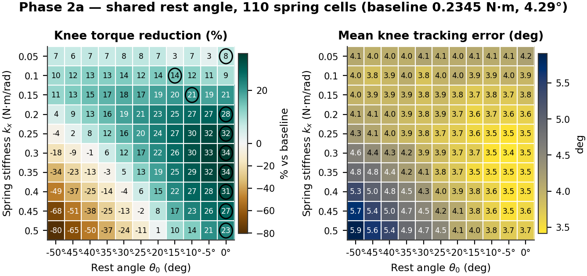
Figure 4. Phase 2a torque reduction and mean tracking error over the shared-angle grid. Circles mark each row optimum.
Table 4. Per-knee best achievable reduction. Each row is a different grid cell — these values cannot be compared as though they came from one configuration.
| Knee | Baseline effort (N·m) | Best reduction | at kx | at θ0 | Stance qop | HOLD (N·m) |
|---|---|---|---|---|---|---|
| FR | 0.2387 | 33.72% | 0.35 | 0° | +37.2° | -0.246 |
| BR | 0.2359 | 35.21% | 0.30 | 0° | +42.9° | -0.248 |
| BL | 0.2423 | 37.58% | 0.50 | -15° | -40.8° | +0.264 |
| FL | 0.2210 | 31.46% | 0.30 | 0° | -38.4° | +0.258 |
Every one of the top five configurations sits at θ0 = 0° or −5°, and the far corner of the grid collapses to −80%. Both follow from one fact: the legs are mirrored. The right knees stand at qop = +37.2° and +42.9° with holding torques of −0.246 and −0.248 N·m; the left knees at −38.4° and −40.8° with +0.258 and +0.264 N·m. The required assist has opposite sign on the two sides.
A single shared θ0 can only serve both sides at θ0 = 0°, where the lever arm is -qop and therefore already carries each side's sign. Move away from zero and the two sides fail in opposite ways.
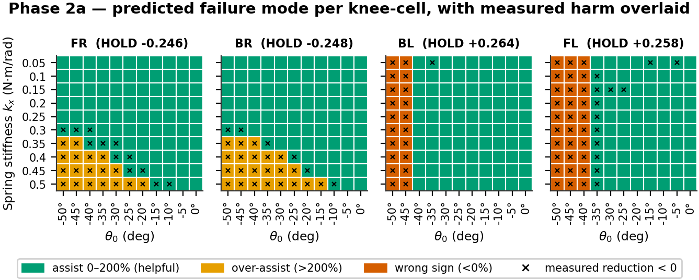
Figure 5. Predicted failure mode for each of the 440 knee-cells from the assist ratio of Section 1.3, with cells whose measured reduction is negative overlaid as crosses.
Table 5. Failure modes by knee. Wrong-sign and over-assist occur on opposite sides and in opposite corners of the grid.
| Knee | HOLD (N·m) | Wrong sign (ratio < 0) | Over-assist (ratio > 200%) | Predicted harmful | Measured reduction < 0 |
|---|---|---|---|---|---|
| FR | -0.246 | 0 | 18 | 18 | 30 |
| BR | -0.248 | 0 | 22 | 22 | 28 |
| BL | +0.264 | 20 | 0 | 20 | 21 |
| FL | +0.258 | 30 | 0 | 30 | 43 |
| Total | 50 | 40 | 90 | 122 |
The prediction and the measurement agree on 92.7% of the 440 knee-cells, and the agreement is one-directional in a useful way: all 90 cells predicted harmful do measure negative — there are no false positives — while 32 cells measure negative without being predicted so. The static model is therefore a reliable sufficient condition for harm and an optimistic one overall; dynamic effects harm cells the static model passes.
The right knees never suffer wrong-sign assist (0 cells) but are over-assisted in 40 cells at high stiffness. The left knees are never over-assisted but receive wrong-sign assist in 50 cells — 20 for BL, 30 for FL, the difference being simply that FL's stance angle is 2.5° shallower. 50 of 440 knee-cells (11.4%) were therefore uninterpretable by construction, not by mis-tuning.
Effort is minimised when the assist cancels the holding torque, which gives a predicted optimal stiffness for every rest angle:
k_x* = |HOLD| / |θ₀ − q_op|
a hyperbola in the (kx, θ0) plane — a ridge, not a peak.
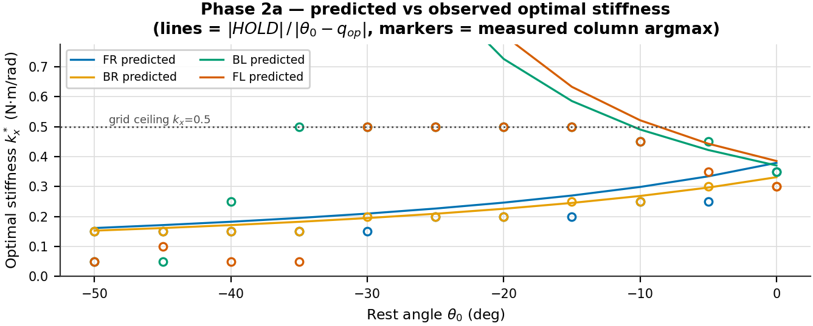
Figure 6. Predicted optimal stiffness against the measured column-wise argmax, per knee. Lines are the static model; markers are measurements.
For the right knees the model is essentially exact. For the left knees the predicted kx* runs off the top of the grid for θ0 < −10°, so the measured argmax is pinned to the boundary or, inside the wrong-sign region, collapses to the smallest stiffness — where a harmful spring does least damage. The apparent model failure on the left is a grid-range and sign artifact, not a modelling error.
Consequence. Reporting "the optimum is kx = 0.30, θ0 = 0°" overstates the result's specificity. The defensible statement is that an assist torque of ≈0.25 N·m removes about a third of knee effort, and that (0.30, 0°) is one convenient point on the locus delivering it.
One further caution on Phase 2a: 109 of its 111 runs saturate the actuator at least once, so no claim about staying inside the torque envelope is supportable from this sweep.
Each knee now receives θ0 = sign(HOLD) · |θ0|, making the assist direction correct on all four knees by construction. The grid became kx ∈ {0.05 … 0.45} × |θ0| ∈ {0 … 45°} = 90 cells plus baseline. Body pose, odometry and IMU logging were added, enabling forward displacement and therefore cost of transport.
Table 6. Phase 2b best five configurations by mean knee effort. Baseline 0.2352 N·m.
| Rank | kx | |θ0| | Mean effort (N·m) | Reduction | RMS (N·m) | p99 (N·m) | Sat. | Track err | Knee spread (pts) |
|---|---|---|---|---|---|---|---|---|---|
| 1 | 0.15 | ±35° | 0.1543 | 34.39% | 0.2126 | 0.8745 | 0.75% | 3.40° | 2.71 |
| 2 | 0.20 | ±20° | 0.1546 | 34.28% | 0.2125 | 0.8753 | 0.69% | 3.51° | 3.49 |
| 3 | 0.20 | ±15° | 0.1549 | 34.12% | 0.2121 | 0.8636 | 0.31% | 3.54° | 1.15 |
| 4 | 0.15 | ±40° | 0.1550 | 34.10% | 0.2130 | 0.8884 | 0.75% | 3.46° | 4.92 |
| 5 | 0.15 | ±30° | 0.1551 | 34.04% | 0.2127 | 0.8695 | 0.31% | 3.47° | 1.83 |
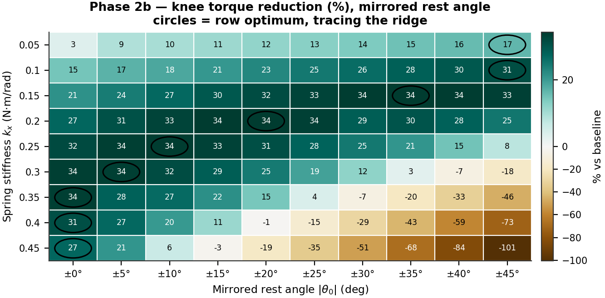
Figure 7. Phase 2b torque reduction over the mirrored grid, full colour range. Circles mark row optima, which trace the ridge.
Table 7. Complete Phase 2b reduction grid (%). Bold marks each row optimum; negative values are over-assist.
| kx \ |θ0| | ±0° | ±5° | ±10° | ±15° | ±20° | ±25° | ±30° | ±35° | ±40° | ±45° |
|---|---|---|---|---|---|---|---|---|---|---|
| 0.05 | 3.2 | 8.9 | 9.9 | 10.9 | 11.9 | 12.8 | 13.8 | 15.1 | 16.1 | 16.6 |
| 0.10 | 14.8 | 17.1 | 18.3 | 20.6 | 22.7 | 24.9 | 26.5 | 28.4 | 29.6 | 31.2 |
| 0.15 | 21.4 | 24.4 | 27.1 | 29.7 | 31.5 | 33.0 | 34.0 | 34.4 | 34.1 | 33.4 |
| 0.20 | 27.1 | 30.8 | 32.9 | 34.1 | 34.3 | 33.6 | 28.6 | 30.3 | 28.0 | 25.2 |
| 0.25 | 31.9 | 33.8 | 34.0 | 33.2 | 31.1 | 27.9 | 25.0 | 20.8 | 14.8 | 7.9 |
| 0.30 | 33.7 | 33.7 | 31.5 | 28.6 | 24.5 | 19.3 | 12.2 | 2.7 | -7.3 | -18.0 |
| 0.35 | 33.6 | 28.0 | 26.8 | 21.5 | 14.5 | 4.1 | -7.5 | -20.0 | -32.6 | -45.6 |
| 0.40 | 31.0 | 26.9 | 20.3 | 11.2 | -1.2 | -14.9 | -29.1 | -43.5 | -58.7 | -73.0 |
| 0.45 | 27.4 | 20.9 | 6.2 | -2.9 | -18.6 | -34.7 | -51.1 | -67.8 | -83.8 | -100.7 |
Table 8. The ridge, read off row by row.
| kx (N·m/rad) | Best |θ0| | Reduction there |
|---|---|---|
| 0.05 | ±45° | 16.64% |
| 0.10 | ±45° | 31.22% |
| 0.15 | ±35° | 34.39% |
| 0.20 | ±20° | 34.28% |
| 0.25 | ±10° | 34.00% |
| 0.30 | ±5° | 33.72% |
| 0.35 | ±0° | 33.64% |
| 0.40 | ±0° | 31.04% |
| 0.45 | ±0° | 27.36% |
As stiffness rises the best rest angle falls monotonically, exactly as kx·(|θ0| + |qop|) requires. Everything from kx = 0.15 to 0.35 delivers 33.6–34.4% — a 0.8-point band across five very different parameter pairs. The design has one effective degree of freedom, not two. This is good news for manufacturing: the spring must deliver roughly the right assist torque, and how that is split between stiffness and preload is a convenience.
Only 23 of 90 cells exceed 30% reduction and 19 are actively harmful, so the useful region is a narrow band rather than most of the grid. The penalty is strongly asymmetric: moving along the ridge costs almost nothing, moving across it is severe — at kx = 0.45, going from ±0° to ±45° takes mean effort from 0.171 to 0.472 N·m, roughly double baseline. If the spring must be mis-sized, size it low.
Both ends of the ridge exit the grid: below kx = 0.10 the best |θ0| is 45°, the grid edge, and at kx ≥ 0.35 the best is 0°, also an edge (mirroring forbids going further). The interior optimum near kx 0.15–0.25 is genuine; the low-stiffness branch is unmapped.
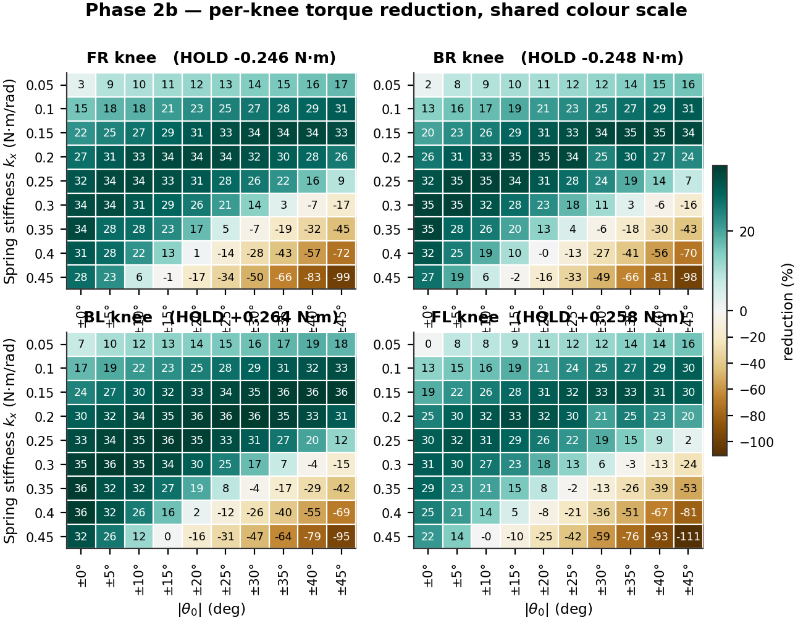
Figure 8. Per-knee reduction across the mirrored grid on a shared colour scale, so the four panels are directly comparable.
Across the grid the best-minus-worst knee spread runs from 1.15 to 15.58 points, median 8.85. The minimum occurs at kx = 0.20, |θ0| = ±15°, which happens to sit near all four knees' individual optima simultaneously. FL is consistently the weakest knee and BL the strongest; that ordering follows the measured holding torques (0.246 → 0.264 N·m) and is not a mirroring defect. Only per-knee stiffness could remove the residue.
Cost of transport is a property of the whole robot, so the numerator counts all 12 joints even though only the knees carry springs: CoT = E / (m g d) with mg = 13.7050 N. The knees account for 55.2% of total mechanical work, so a knee-only figure would understate the true cost by nearly half.
Table 9. The three cost-of-transport definitions. They differ only in how the numerator counts energy.
| Variant | Definition | Baseline | Best value | Best cell | Change | Cells beating baseline | r vs reduction | What it measures |
|---|---|---|---|---|---|---|---|---|
| Mechanical | Σ|τ·dθ| / mgd | 2.7149 | 2.3012 | kx=0.25, ±15° | -15.24% | 68 | -0.787 | total mechanical work |
| Positive work | Σmax(0, τ·dθ) / mgd | 2.1830 | 1.8178 | kx=0.25, ±15° | -16.73% | 75 | -0.366 | driving work only (optimistic bound) |
| Electrical proxy | ∫τ²dt / mgd | 0.8779 | 0.5734 | kx=0.20, ±15° | -34.68% | 69 | -0.986 | motor copper loss (I²R) |
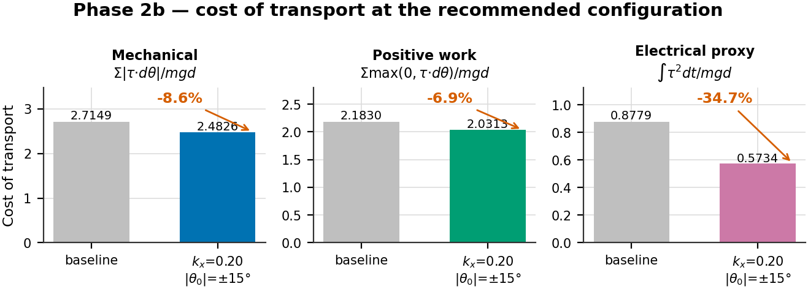
Figure 9. Cost of transport at baseline and at the recommended configuration. All three bars come from that single configuration.
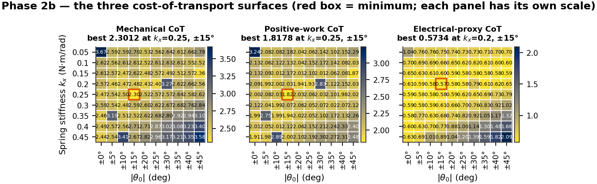
Figure 10. The three CoT surfaces across the grid. Each panel is independently scaled; the red box marks its minimum.
Table 10. Cost of transport at the three candidate configurations. Quoting a CoT number requires naming its cell: the three optima are three different cells.
| Configuration | Reduction | Mechanical CoT | Positive-work CoT | Electrical CoT | All-joint work |
|---|---|---|---|---|---|
| Torque optimum kx=0.15, ±35° |
34.39% | 2.5147 (-7.4%) | 2.0625 (-5.5%) | 0.5796 (-34.0%) | 11.36 J (-6.2%) |
| Recommended kx=0.20, ±15° |
34.12% | 2.4826 (-8.6%) | 2.0313 (-6.9%) | 0.5734 (-34.7%) | 11.26 J (-7.1%) |
| Mechanical-CoT optimum kx=0.25, ±15° |
33.22% | 2.3012 (-15.2%) | 1.8178 (-16.7%) | 0.5808 (-33.8%) | 10.45 J (-13.8%) |
Mechanical CoT improves only 7.4% at the torque optimum while torque falls 34.4%. This looks like a failure and is not. Mechanical work is τ · dθ, so a motor holding a static load registers zero work while still drawing current — and cancelling static holding torque is precisely what a gravity-compensating spring does. Mechanical work is blind to the very effect under test.
The electrical proxy ∫τ2 dt is the copper-loss surrogate (P = I2R, I ∝ τ), and it falls 34.7% — tracking the torque reduction almost exactly at r = −0.986, against −0.787 for mechanical CoT and −0.366 for the positive-work variant. If one efficiency number is quoted, it should be the electrical one.
Two honest caveats. The proxy is not in joules: converting ∫τ2dt to energy needs the servo's torque constant kt and winding resistance R, which we do not have, so only relative comparisons are valid. And the raw work figure (−6.2%) differs slightly from mechanical CoT (−7.4%) at the same cell purely because forward displacement rose 1.3%; both are correct, and the distinction has been conflated in earlier drafts.
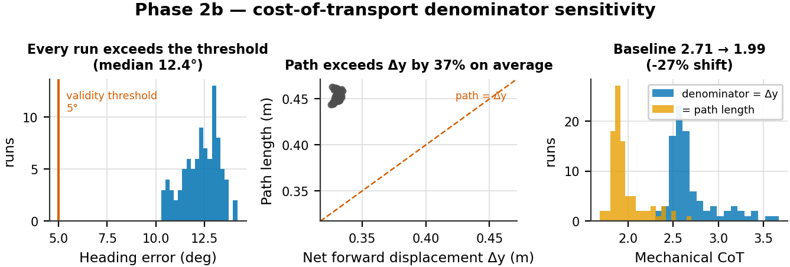
Figure 11. Denominator sensitivity. Left: heading error against the 5° threshold below which net forward displacement is a defensible denominator. Centre: path length against net displacement. Right: the mechanical CoT distribution under each denominator.
This is the weakest part of the CoT analysis and is stated plainly. Net forward displacement Δy is a defensible denominator only when the robot walks roughly straight; the working threshold adopted when this logging was designed was ≲5° of heading error. The measured heading error is 14.20° at baseline and exceeds 5° in all 91 runs (median 12.41°, straightness ratio ≈0.74).
Using measured path length instead of net displacement changes baseline mechanical CoT from 2.7149 to 1.9920 — a 26.6% shift. Every absolute CoT number in this report should therefore be read as carrying roughly a ±27% systematic band, and CoT should not be compared against literature values without stating the convention.
What survives is the comparison between configurations: the two denominators rank the 90 cells almost identically (r = 0.996), because path length varies little across the grid. Configuration selection is unaffected; only the absolute level is uncertain. The report keeps Δy as the headline convention for continuity with the logged data, and treats the path-length figure as a bound.
Displacement itself is nearly invariant — coefficient of variation 0.55% across the grid, against 10% variation in mechanical work — so CoT differences are genuine energy differences, not denominator artifacts (r between CoT and work = 0.9986).
Table 11. Every metric at baseline, at the torque optimum and at the recommended configuration, with each metric-to-reduction correlation across the 90 spring cells.
| Metric | Baseline | Torque opt. (0.15, ±35°) |
Δ | Recommended (0.20, ±15°) |
Δ | r vs reduction |
|---|---|---|---|---|---|---|
| Mean applied knee effort (N·m) | 0.2352 | 0.1543 | -34.4% | 0.1549 | -34.1% | — by construction |
| RMS applied knee effort (N·m) | 0.2863 | 0.2126 | -25.7% | 0.2121 | -25.9% | -0.996 |
| p99 knee demand (N·m) | 0.9311 | 0.8745 | -6.1% | 0.8636 | -7.2% | -0.852 |
| Peak knee demand (N·m) | 0.9831 | 0.9502 | -3.3% | 0.9352 | -4.9% | -0.016 |
| Torque variance (N²·m²) | 0.0266 | 0.0214 | -19.7% | 0.0210 | -21.3% | -0.596 |
| Actuator saturation (%) | 0.6875 | 0.7500 | +9.1% | 0.3125 | -54.5% | -0.457 |
| Mean tracking error (deg) | 4.299 | 3.395 | -21.0% | 3.543 | -17.6% | -0.996 |
| Forward displacement (m) | 0.3256 | 0.3297 | +1.3% | 0.3309 | +1.6% | +0.192 |
| Mechanical CoT | 2.7149 | 2.5147 | -7.4% | 2.4826 | -8.6% | -0.787 |
| Electrical-proxy CoT | 0.8779 | 0.5796 | -34.0% | 0.5734 | -34.7% | -0.986 |
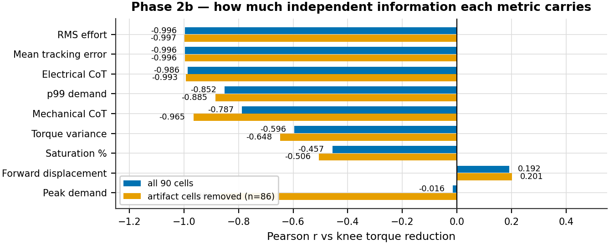
Figure 12. How much independent information each metric carries, with and without the four control-artifact cells.
RMS effort falls 25.7% where mean effort falls 34.4%. The spring cancels the DC gravity bias but not the AC dynamic component, so the thermally relevant saving is real but smaller than the headline. Quote 25.7%, not 34.4%, when discussing motor heating.
Mean tracking error correlates with reduction at r = −0.996. It is therefore not
independent evidence that gait quality survived — it restates the effort result. It is
additionally confounded: the metric samples joint state on the first /joint_states
after each command, so most of its ~3° floor is waypoint spacing rather than controller
error. Saturation and forward displacement are the only genuinely independent checks in
the set, and both stay healthy.
Peak demand correlates at only r = −0.016 — apparently pure noise. Removing the four control-artifact cells raises this to −0.866, which is the more informative statement: peak demand does follow the spring, but four discretisation artifacts dominate the statistic entirely.
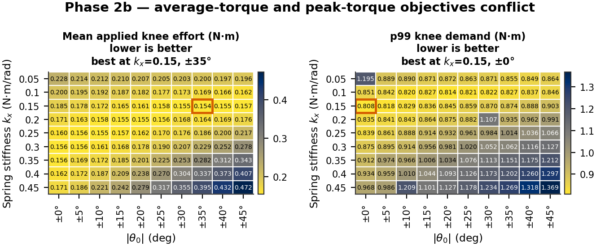
Figure 13. Mean applied effort and p99 demand over the same grid. Their optima sit in opposite corners.
Average-torque and peak-torque objectives genuinely conflict. For kx ≥ 0.15 the p99 minimum always lies at |θ0| = 0° and rises monotonically with rest angle. The best p99 cell is kx = 0.15, ±0° at 0.8084 N·m — but it delivers only 21.40% reduction. A configuration cannot maximise both.
Ranking cells on a single metric hides this conflict, so the recommendation is made on a joint constraint instead: reduction > 30% AND p99 demand ≤ baseline. Exactly 20 of 90 cells qualify.
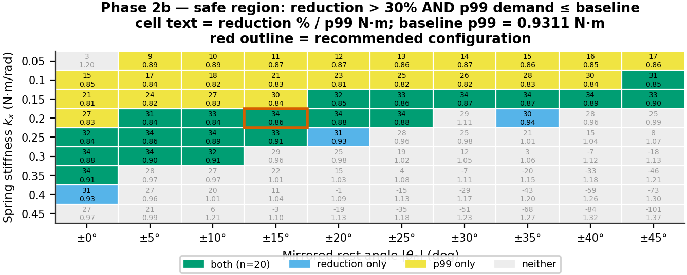
Figure 14. Cells satisfying each constraint and both. Cell labels give reduction % over p99 demand.
Table 12. The 20 cells meeting both constraints, ordered by reduction.
| kx | |θ0| | Reduction | p99 (N·m) | Electrical CoT | Spread (pts) |
|---|---|---|---|---|---|
| 0.15 | ±35° | 34.39% | 0.8745 | 0.5796 | 2.71 |
| 0.20 | ±20° | 34.28% | 0.8753 | 0.5785 | 3.49 |
| 0.20 | ±15° | 34.12% | 0.8636 | 0.5734 | 1.15 |
| 0.15 | ±40° | 34.10% | 0.8884 | 0.5830 | 4.92 |
| 0.15 | ±30° | 34.04% | 0.8695 | 0.5819 | 1.83 |
| 0.25 | ±10° | 34.00% | 0.8882 | 0.5812 | 4.33 |
| 0.25 | ±5° | 33.79% | 0.8607 | 0.5815 | 2.38 |
| 0.30 | ±5° | 33.72% | 0.8954 | 0.5833 | 6.00 |
| 0.30 | ±0° | 33.66% | 0.8755 | 0.5894 | 4.88 |
| 0.35 | ±0° | 33.64% | 0.9120 | 0.5846 | 7.31 |
| 0.20 | ±25° | 33.56% | 0.8822 | 0.5822 | 6.30 |
| 0.15 | ±45° | 33.40% | 0.9027 | 0.5859 | 5.72 |
| 0.25 | ±15° | 33.22% | 0.9139 | 0.5808 | 7.27 |
| 0.15 | ±25° | 32.97% | 0.8588 | 0.5840 | 1.64 |
| 0.20 | ±10° | 32.87% | 0.8432 | 0.5831 | 2.49 |
| 0.25 | ±0° | 31.89% | 0.8392 | 0.5890 | 2.87 |
| 0.30 | ±10° | 31.53% | 0.9141 | 0.5920 | 8.68 |
| 0.15 | ±20° | 31.51% | 0.8452 | 0.5923 | 2.38 |
| 0.10 | ±45° | 31.22% | 0.8459 | 0.5951 | 2.81 |
| 0.20 | ±5° | 30.82% | 0.8406 | 0.5877 | 2.74 |
Table 13. Standing of the recommended configuration on every metric. Ranks are over the 90 spring cells, best first.
| Property | Value | Rank (best first) | Note |
|---|---|---|---|
| Knee torque reduction | 34.12% | 3 of 90 | 0.27 pts off best |
| Electrical-proxy CoT | 0.5734 | 1 of 90 | -34.7% vs baseline |
| RMS applied effort | 0.2121 N·m | 1 of 90 | -25.9% vs baseline |
| Bilateral spread | 1.15 pts | 1 of 90 | tightest cell in the sweep |
| p99 demand | 0.8636 N·m | 25 of 90 | 8.3% below the 0.9414 N·m rating |
| Actuator saturation | 0.3125% | 15–24 of 90 | tied with 9 other cells |
| Mechanical CoT | 2.4826 | 13 of 90 | -8.6% vs baseline |
| Mean tracking error | 3.54° | 21 of 90 | -17.6% vs baseline |
| Forward displacement | 0.3309 m | — | grid mean 0.3305 m |
kx = 0.20 N·m/rad, |θ0| = ±15° is recommended. It is inside the safe region, first of 90 on electrical CoT, RMS effort and bilateral symmetry, third on torque reduction (0.27 points off the best), and its p99 demand sits 8.3% below the actuator rating.
Its saturation of 0.3125% is not best-in-sweep, contrary to an earlier draft of this analysis: ten cells share that exact value and 14 are strictly lower, placing it 15th to 24th of 90 depending on tie handling. The tie itself is informative — 0.3125% is exactly 5 of 1600 samples, and saturation quantises so coarsely here that it stops discriminating between good cells.
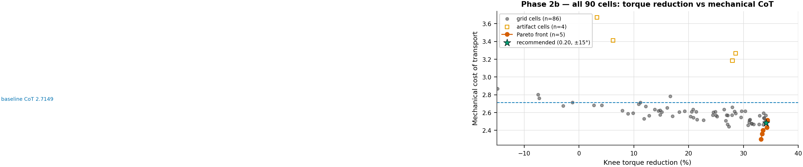
Figure 15. All 90 cells in the reduction–CoT plane with the true non-dominated front.
Table 14. The Pareto front for maximising reduction and minimising mechanical CoT.
| kx | |θ0| | Reduction | Mechanical CoT | Electrical CoT | p99 (N·m) |
|---|---|---|---|---|---|
| 0.15 | ±35° | 34.39% | 2.5147 | 0.5796 | 0.8745 |
| 0.20 | ±20° | 34.28% | 2.4336 | 0.5785 | 0.8753 |
| 0.20 | ±25° | 33.56% | 2.4020 | 0.5822 | 0.8822 |
| 0.15 | ±45° | 33.40% | 2.3612 | 0.5859 | 0.9027 |
| 0.25 | ±15° | 33.22% | 2.3012 | 0.5808 | 0.9139 |
The front contains only 5 of 90 cells and spans 1.17 points of reduction against 0.21 of CoT, so the trade-off is mild. Note that the recommended cell is not on this front — it is dominated by kx = 0.20, ±20°, which is better on both axes. It is preferred anyway because the front ignores bilateral symmetry and p99 demand, where ±15° is markedly better. This is a deliberate choice between objectives, not an oversight.
Table 15. The four cells whose peak/p99 demand ratio exceeds 5. Displacement is normal in all four, so the inflation is entirely in the energy numerator.
| kx | |θ0| | Peak demand (N·m) | p99 (N·m) | Peak/p99 | Mechanical CoT | Displacement (m) |
|---|---|---|---|---|---|---|
| 0.05 | ±0° | 11.03 | 1.195 | 9.2× | 3.6708 | 0.3273 |
| 0.20 | ±30° | 11.31 | 1.107 | 10.2× | 3.2664 | 0.3290 |
| 0.35 | ±5° | 11.08 | 0.974 | 11.4× | 3.1854 | 0.3310 |
| 0.45 | ±10° | 20.90 | 1.209 | 17.3× | 3.4130 | 0.3331 |
Median all-joint work across the grid: 11.79 J; these four cells: 14.45–16.47 J.
These four cells show peak demand of 11–21 N·m against a p99 near 1.2 — the signature of a single-sample derivative kick off the 10 Hz stepped set-point, which saturates the actuator for a few consecutive samples while the joint is moving. That produces real mechanical work in the simulation, but its cause is control discretisation, not the spring. All top-10 cells by CoT are artifact-free, so the optimum is unaffected.
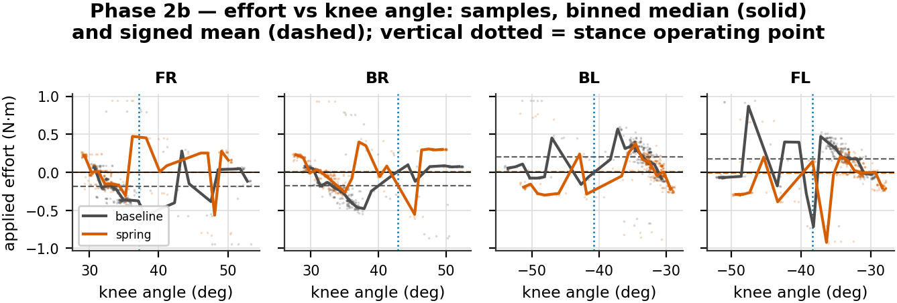
Figure 16. Applied effort against knee angle for baseline and the recommended spring. Points are 50 Hz samples over five gait cycles; solid lines are binned medians; dashed lines are signed means.
The signed mean effort per knee moves toward zero under the spring — this is the DC gravity bias being cancelled, and it is the mechanism behind the whole result. The sample clouds show the spread is unchanged, which is the same AC/DC split that makes RMS improve less than the mean. Note that knee angle is not monotonic within a cycle (swing and stance revisit the same angles), so the binned median mixes phases and should be read as a summary rather than a trajectory.
Table 16. Cross-sweep comparison. The two grids share only the θ0 = 0° column, which serves as a regression check.
| Metric | Phase 2a (shared) | Phase 2b (mirrored) | Change |
|---|---|---|---|
| Runs | 111 | 91 | — |
| Spring cells | 110 | 90 | — |
| Grid | kx 0.05–0.50 × θ0 0…−50° | kx 0.05–0.45 × |θ0| 0…45° | no shared interior |
| Baseline mean effort (N·m) | 0.2345 | 0.2352 | re-simulated, +0.31% |
| Best reduction | 33.97% | 34.39% | +0.42 pts |
| RMS at best cell | -25.33% | -25.73% | comparable method |
| Wrong-sign knee-cells | 50 / 440 (11.4%) | 0 / 360 (0%) | eliminated |
| Bilateral spread at own optimum | 3.96 pts | 2.71 pts | 1.46× tighter |
| Bilateral spread at recommended | — | 1.15 pts | 3.44× tighter than 2a |
| θ0 = 0° regression check (kx=0.30) | 33.97% | 33.66% | within run-to-run noise |
| Saturation range | 0.00–2.56% | 0.00–2.12% | — |
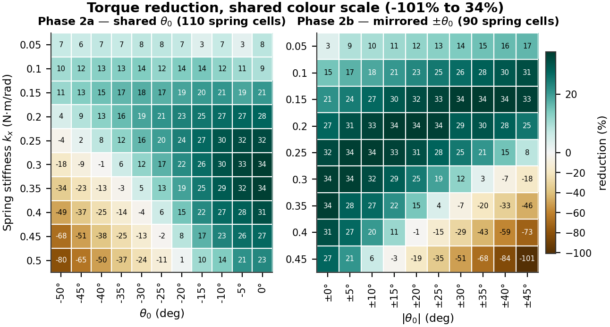
Figure 17. Both sweeps on a shared colour scale, so equal reductions render as equal colours.
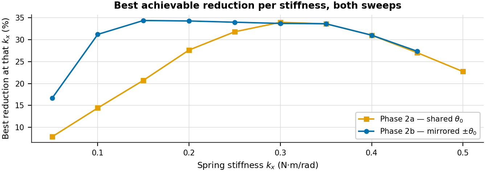
Figure 18. Best achievable reduction at each stiffness.
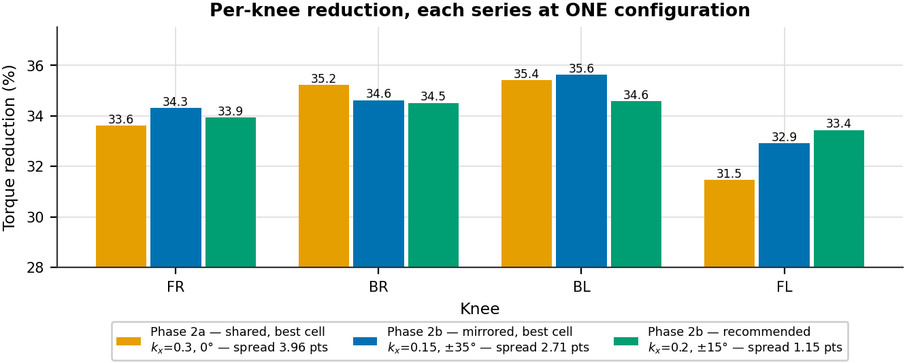
Figure 19. Per-knee reduction. Each series is one single configuration — mixing cells here is what produced an inflated asymmetry figure in earlier drafts.
The headline barely moved: 33.97% → 34.39%. That is the honest result. Mirroring did not buy a larger reduction; it bought a sweep in which all 90 cells are physically interpretable instead of 11.4% of knee-cells being wrong-signed, and in which the recommended setting helps all four knees nearly equally.
Bilateral spread at each sweep's own optimum improves from 3.96 to 2.71 points, and at the recommended cell to 1.15 points — 3.4× tighter than Phase 2a.
A caution about that comparison, because it has been got wrong before. The spread of the four knees' individually best reductions in Phase 2a is 6.12 points, but those four values come from four different grid cells (BL's 37.58% is at kx = 0.50, −15°). That number describes what separately-tuned springs could achieve; it is not the spread at any single operating point, and using it as such overstates Phase 2a's asymmetry by about 55%.
The θ0 = 0° column is a genuine regression check, since mirroring by zero is a no-op: at kx = 0.30 the two sweeps give 33.97% and 33.66%, within run-to-run variation (the baselines themselves differ by 0.31%).
target_freq was set to 5, 10 and 20 Hz, replaying the same 16-waypoint trajectory
faster or slower. No spring was fitted. Cycle time is
NUM_DATA_POINTS / target_freq, so this changes speed while leaving trajectory shape
and per-step geometry untouched.
Table 17. Frequency sweep. Percentages are relative to the 10 Hz baseline. The knee step jump is identical across all three runs, confirming that only speed changed.
| Run | target_freq |
Cycle (s) | Mean effort (N·m) | RMS (N·m) | Peak demand (N·m) | Saturation | Track err mean/RMS/peak | Knee step jump |
|---|---|---|---|---|---|---|---|---|
| run3 | 5 Hz | 3.2 | 0.2101 (-8.3%) | 0.2535 (-9.6%) | 0.953 (-1.9%) | 0.188% (0.25×) | 3.76° / 6.58° / 21.0° | 2.989 |
| run1 | 10 Hz (baseline) | 1.6 | 0.2292 | 0.2804 | 0.972 | 0.750% | 4.11° / 6.81° / 20.8° | 2.989 |
| run2 | 20 Hz | 0.8 | 0.2424 (+5.8%) | 0.3265 (+16.5%) | 1.235 (+27.1%) | 4.875% (6.50×) | 4.19° / 6.92° / 21.2° | 2.989 |
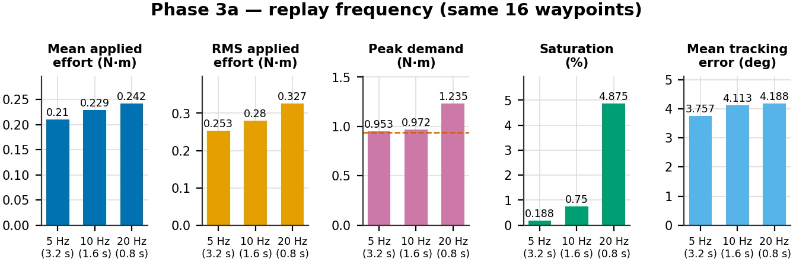
Figure 20. Frequency sweep metrics. The dashed line on the peak-demand panel is the actuator rating.
The isolation is verified rather than assumed: the mean per-step knee jump is 2.989° and the maximum 22.234° in all three runs, identical to three decimals. Only the time available to reach each waypoint changed.
Speeding up is expensive at the peak, not at the mean. At 20 Hz the same 2.989° jump must be achieved in half the time, so the derivative term reacts harder: peak demand rises 27.1% to 1.235 N·m — well above the 0.9414 N·m rating — and saturation multiplies by 6.5× to 4.88%. At 5 Hz saturation falls to a quarter and peak demand is essentially flat.
Mean and RMS effort move far more mildly (−8.3%/+5.8% and −9.6%/+16.5%) because they are dominated by stance holding torque, which speed does not change. Tracking error moves in the same direction but by only ±0.35°.
Frequency is the clean lever for changing speed, since it provably preserves trajectory geometry. It is not a good lever for reducing peak torque.
NUM_DATA_POINTS was set to 8, 16 and 32 at a fixed 10 Hz, sampling the same
underlying Bézier swing arc and linear stance sweep at different resolutions. No spring
was fitted.
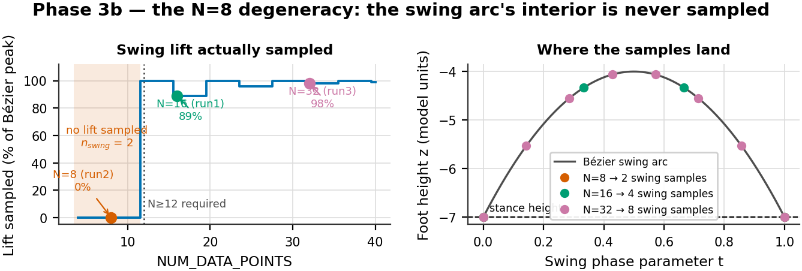
Figure 21. Foot lift actually sampled from the swing arc as a function of waypoint count, and where the samples land on the curve.
Table 18. Swing-lift sampling against waypoint count. The cliff is a hard one.
NUM_DATA_POINTS |
nswing | Lift (units) | % of Bézier peak | Sampled z | Verdict |
|---|---|---|---|---|---|
| 8 | 2 | 0.000 | 0.0% | -7.00, -7.00 | degenerate — foot drags |
| 11 | 2 | 0.000 | 0.0% | -7.00, -7.00 | degenerate — foot drags |
| 12 | 3 | 3.000 | 100.0% | -7.00, -4.00, -7.00 | minimum viable — single peak sample |
| 16 | 4 | 2.667 | 88.9% | -7.00, -4.33, -4.33, -7.00 | usable |
| 20 | 5 | 3.000 | 100.0% | -7.00, -4.75, -4.00, -4.75, -7.00 | usable |
| 32 | 8 | 2.939 | 98.0% | -7.00, -5.53, -4.55, -4.06, -4.06… | usable |
The swing foot-path is a quadratic Bézier through P1=(−3,−7), P2=(0,−1),
P3=(3,−7), sampled at n_swing = int(NUM_DATA_POINTS × 0.25) points via
np.linspace(0, 1, n_swing). Two facts combine badly. P2 is a control point, not a
point on the curve, so the arc's true peak is at t = 0.5 and reaches z = −4.0 — three
units of lift, not the six a naive reading suggests. And linspace always includes
t = 0 and t = 1, both of which sit at stance height.
At NUM_DATA_POINTS = 8, n_swing = 2, so the only samples are the two endpoints and
the foot never lifts — it slides from one stance position to the next. This is not a
coarser gait; it is a qualitatively different, much lower-amplitude motion. Every
apparently favourable number in the 8-point run follows from doing less work: lower
effort, no saturation, and a tracking error of 1.00° because a near-flat trajectory is
trivial to follow. The fingerprint is the knee step jump, which collapses from 2.989°
to 0.483° when reducing the point count should have increased it.
Because int() truncates, n_swing stays at 2 for N = 8…11 and jumps to 3 at
N = 12. Any lift at all requires N ≥ 12. The 8-point run is excluded from every
conclusion below and retained only as a documented artifact.
Table 19. Phase 3b spring labelling against measured signed effort.
| Run | Waypoints | spring_mode label |
spring_summary label |
Measured signed mean effort FR/BR/BL/FL (N·m) |
|---|---|---|---|---|
| run1 | 16 | none | Baseline (no spring) | -0.176, -0.169, +0.186, +0.167 |
| run2 | 8 | unknown | Spring (native) — knee: kx=0.5 N·m/rad, θ₀=-50 | -0.192, -0.124, +0.121, +0.228 |
| run3 | 32 | none | Baseline (no spring) | -0.163, -0.151, +0.170, +0.150 |
The 8-point run's run_info.txt reports spring_mode: unknown with a summary
describing a kx = 0.5, θ0 = −50° spring, while its two siblings report no spring.
This is a metadata race, not a physical difference: its measured signed per-knee efforts
(−0.192, −0.124, +0.121, +0.228 N·m) sit in the same range and the same sign pattern as
both baseline siblings, nowhere near the roughly doubled effort that configuration
produced in Phase 2a. No spring was active; only the label is wrong. The same
caveat applies to Phase 3a, whose runs carry a stale spring_config block while
reporting spring_mode: none.
Table 20. Resolution sweep. Percentages are relative to the 16-point baseline. The 8-point run is degenerate and excluded from conclusions.
| Run | NUM_DATA_POINTS |
Cycle (s) | Swing samples | Lift sampled | Mean effort (N·m) | RMS (N·m) | Peak demand (N·m) | Saturation | Track err | Knee step jump |
|---|---|---|---|---|---|---|---|---|---|---|
| run2 | 8 pts ⚠ | 0.8 | 2 | 0% | 0.1749 (-22.1%) | 0.2090 (-24.2%) | 0.689 (-28.7%) | 0.000% | 1.00° | 0.483 |
| run1 | 16 pts (baseline) | 1.6 | 4 | 89% | 0.2246 | 0.2756 | 0.965 | 0.625% | 4.05° | 2.989 |
| run3 | 32 pts | 3.2 | 8 | 98% | 0.1994 (-11.2%) | 0.2419 (-12.2%) | 0.495 (-48.7%) | 0.000% | 2.92° | 1.610 |
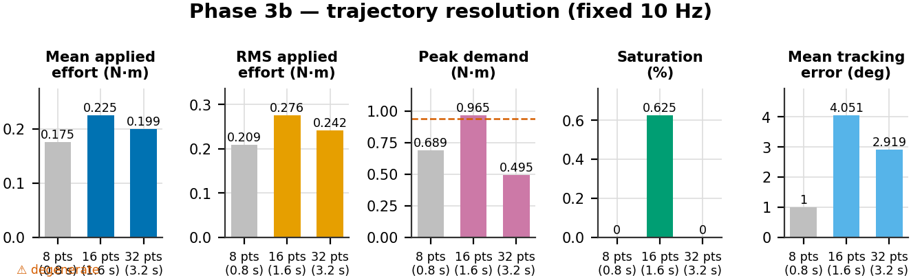
Figure 22. Resolution sweep metrics. The 8-point bar is greyed as degenerate.
The valid comparison is 16 vs 32 points, and it is the strongest result in this section: peak demand falls 48.7% (0.965 → 0.495 N·m) and saturation goes to zero, with no spring and no change in replay speed. Mean and RMS effort fall much more modestly (−11.2%/−12.2%), again because stance holding torque dominates them and is resolution-independent.
This confirms directly that peak knee demand in this system is an artifact of the stepped set-point rather than a property of the gait: finer sampling shrinks the step discontinuity itself.
Table 21. Both levers at ≈3.2 s cycle time. Only these two runs are directly comparable in this way; the 8-point run reaches 0.8 s by breaking the trajectory.
| Metric | Slower replay 5 Hz, 16 pts |
Finer sampling 10 Hz, 32 pts |
Difference |
|---|---|---|---|
| Mean effort (N·m) | 0.2101 | 0.1994 | -5.1% |
| RMS effort (N·m) | 0.2535 | 0.2419 | -4.6% |
| Peak demand (N·m) | 0.953 | 0.495 | -48.1% |
| p99 demand (N·m) | 0.747 | 0.475 | -36.4% |
| Saturation (%) | 0.188 | 0.000 | -100.0% |
| Mean tracking error (deg) | 3.76 | 2.92 | -22.3% |
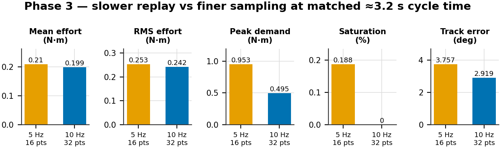
Figure 23. Slower replay against finer sampling at the same cycle time.
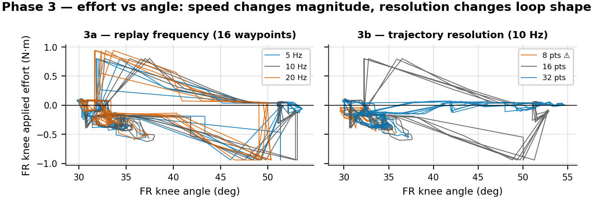
Figure 24. FR-knee effort against angle under both levers. Frequency scales the magnitude; resolution changes the shape of the loop.
At matched cycle time, finer sampling roughly halves peak demand where slower replay does almost nothing (0.495 vs 0.953 N·m). The mechanism is different in each case: slowing the replay gives the controller more time to chase the same discontinuity, while finer sampling removes the discontinuity. If the objective is peak torque, resolution is the effective lever; if the objective is speed alone, frequency is the clean one.
This also answers the question the speed experiments were run to settle: a different gait is not needed to change the torque–angle characteristic. Reducing speed lowers peaks moderately, and increasing waypoint resolution lowers them substantially, both without redesigning the gait.
kx = 0.20 N·m/rad, |θ0| = ±15° (right knees −15°, left knees +15°), giving 34.12% torque reduction, 0.5734 electrical CoT, 1.15-point bilateral spread and p99 demand 8.3% below the actuator rating. It is one of the 20 cells meeting both engineering constraints, and the ridge should be reported alongside it so the sensitivity is visible.
| Study | Joint | Spring type | Reported saving |
|---|---|---|---|
| Quadruped + RL, compliant feet | foot | compliant pad | ~17% |
| Hexapod gait + torque optimisation | multiple | passive + gait management | 22–39% |
| This work | knee | linear torsion, parallel | 34% torque, 35% electrical CoT |
| Nonlinear elastic joints, design opt. | multiple | nonlinear PEA | up to 50% |
| Biped elastic coupling, trajectory opt. | knee/hip | mechanical spring | >50% |
The result sits inside the published 17–50% range using the simplest hardware in that range — a fixed linear spring, no clutch, no adaptive mechanism. Studies exceeding 50% use nonlinear springs or trajectory-optimised actuation. Two caveats on this comparison: these are simulation results with no hardware validation, and the studies quoted measure different things (whole-robot energy vs joint torque), so the row-to-row comparison is indicative rather than like-for-like.
| Supportable | Evidence |
|---|---|
| ~34% mean knee torque reduction | 90-cell sweep, combined over four knees |
| ~35% electrical-proxy CoT improvement | all 12 joints, verified baseline |
| 0 wrong-sign knee-cells under mirroring | 360 cells checked against the assist-ratio model |
| 1.15-point bilateral spread | measured at the recommended cell |
| One effective DOF | 0.8-point band across five distinct cells |
| −48.7% peak demand from resolution | Phase 3b, 16 vs 32 points, no spring |
| Not supportable | Why |
|---|---|
| Mechanical work drops in proportion to torque | it drops 6.2% against 34.4% |
| Any efficiency claim from mechanical CoT alone | understates this device ~4.7× |
| Electrical CoT in joules | the proxy needs kt and R |
| Absolute CoT compared to literature | denominator carries a ±27% systematic band |
| Tracking error as independent quality evidence | collinear at r = −0.996 |
| A smaller knee motor | peak demand is control-limited, not spring-limited |
| Saturation best-in-sweep at the recommended cell | 14 cells are strictly lower |
torque_variance is computed on the rectified signal, so it describes the
magnitude envelope rather than the signed torque, and is not a smoothness measure of
the signed waveform.NUM_DATA_POINTS from 16 to 80 to remove the stepped-set-point artifact, then
re-measure peak demand and re-derive qop/HOLD on the new gait.cd ROS/report
python3 make_figures.py # regenerate all figures + figures/figure_values.json
python3 make_tables.py # print all tables (also importable as a dict)
python3 build_report.py # regenerate experiment_report.md
python3 verify_claims.py # recompute every quoted number; exit 0 = all hold
python3 build_pdf.py # render experiment_report.pdf
data.py is the only module that touches the raw data; verify_claims.py recomputes
every number quoted above directly from the CSVs and additionally cross-checks the
figures against the prose, so a figure and its caption cannot disagree.
| Figure | File |
|---|---|
| 1 | figures/timeline.png |
| 2 | figures/p1_transient.png |
| 3 | figures/p1_traces.png |
| 4 | figures/p2a_grids.png |
| 5 | figures/p2a_failure_map.png |
| 6 | figures/p2a_kx_star.png |
| 7 | figures/p2b_ridge.png |
| 8 | figures/p2b_per_knee.png |
| 9 | figures/p2b_cot_bars.png |
| 10 | figures/p2b_cot_grids.png |
| 11 | figures/p2b_cot_denominator.png |
| 12 | figures/p2b_correlations.png |
| 13 | figures/p2b_p99_vs_mean.png |
| 14 | figures/p2b_safe_region.png |
| 15 | figures/p2b_pareto.png |
| 16 | figures/p2b_effort_vs_angle.png |
| 17 | figures/cross_sweeps.png |
| 18 | figures/cross_best_per_kx.png |
| 19 | figures/cross_asymmetry.png |
| 20 | figures/p3a_bars.png |
| 21 | figures/p3b_swing_cliff.png |
| 22 | figures/p3b_bars.png |
| 23 | figures/p3_matched.png |
| 24 | figures/p3_effort_vs_angle.png |
| Table | Generator id |
|---|---|
| 1 | make_tables.py:T21 |
| 2 | make_tables.py:T1 |
| 3 | make_tables.py:T2 |
| 4 | make_tables.py:T3 |
| 5 | make_tables.py:T4 |
| 6 | make_tables.py:T5 |
| 7 | make_tables.py:T6 |
| 8 | make_tables.py:T7 |
| 9 | make_tables.py:T8 |
| 10 | make_tables.py:T9 |
| 11 | make_tables.py:T10 |
| 12 | make_tables.py:T14 |
| 13 | make_tables.py:T11 |
| 14 | make_tables.py:T12 |
| 15 | make_tables.py:T13 |
| 16 | make_tables.py:T15 |
| 17 | make_tables.py:T16 |
| 18 | make_tables.py:T18 |
| 19 | make_tables.py:T20 |
| 20 | make_tables.py:T17 |
| 21 | make_tables.py:T19 |